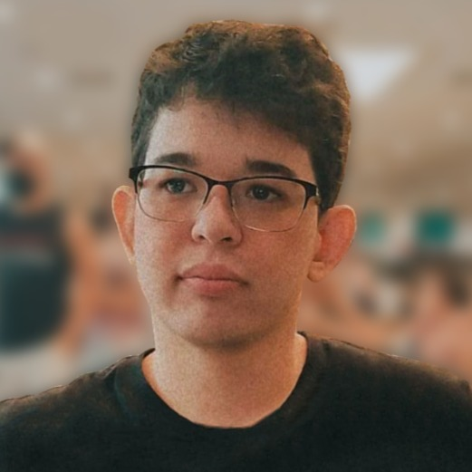

Luiz Felipe Catizane Assis Araujo
Índice com links

Quem é Luiz Felipe?
Tenho 27 anos e sou formado em Publicidade e Propaganda pela PUC Minas, percebi depois de alguns anos trabalhando com marketing digital que minha verdadeira paixão realmente é a programação. Sou brasileiro, nasci em Belo Horizonte – MG e aqui resido atualmente.
Soft Skills:
- Boa oratória
- Criatividade
- Trabalho em equipe
- Gestão de pequenas equipes
- Boa capacidade organizacional
Hard Skills:
- Ingles
- Noções básicas de HTML e CSS
- Design
- Copywriting
- Marketing Digital
Sites preferidos
YouTube
Twitch
Letterboxd
GitHub
LinkedIn